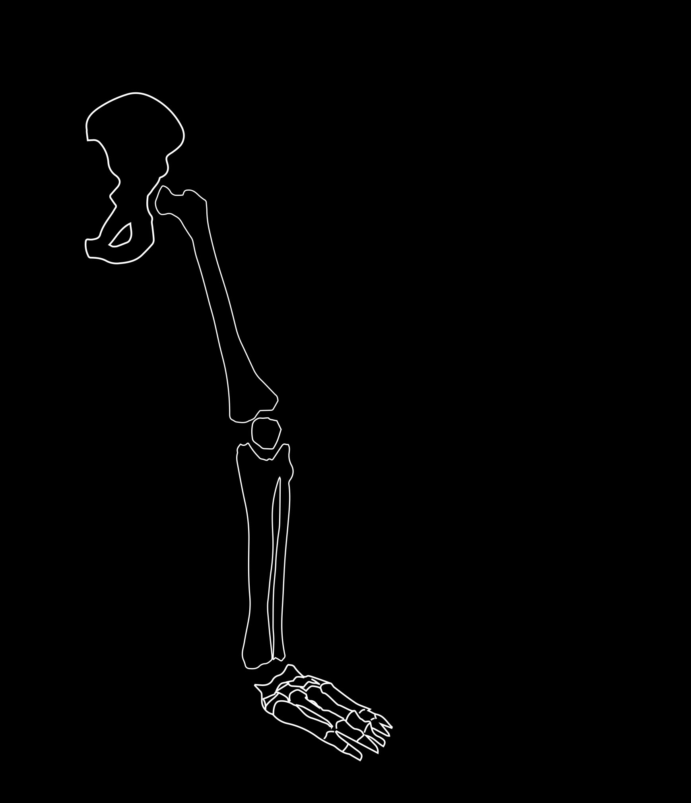
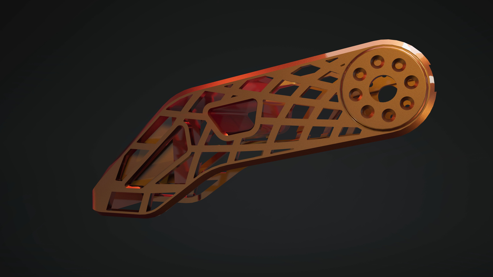
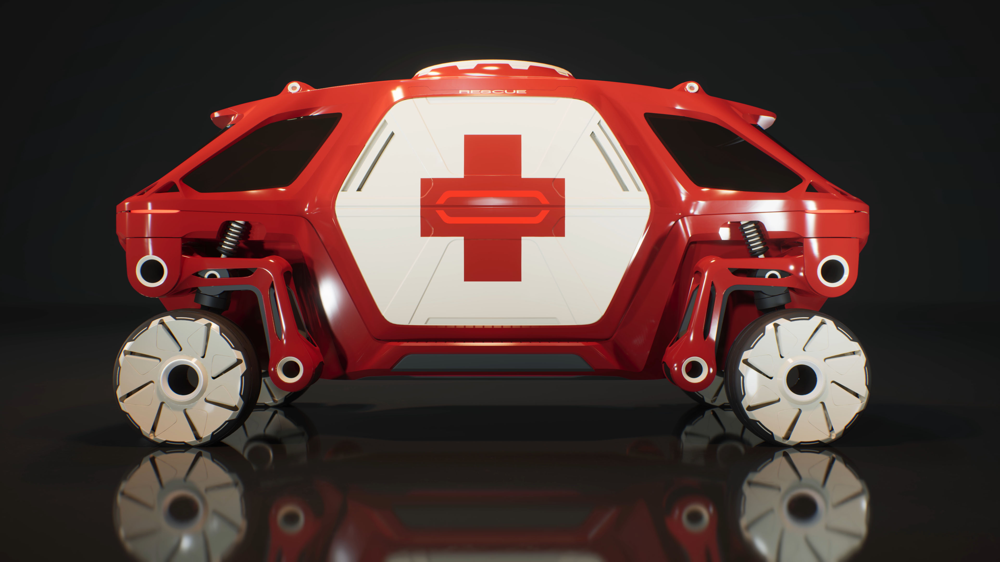

There are limits to where even the toughest off-road vehicles can go. Places with steep or uneven terrain where no reasonable person would think to drive.
How do you make a vehicle that can move through places that are only accessible by foot?
The answer may be a car with legs. Massive legs, with wheels for feet, and a design that borrows more from robotics than automobiles.
Slide to move leg
As humans we take walking for granted. From an engineering perspective, it’s a delicate coordination of joints, muscles, and reflexes that’s difficult to replicate mechanically.

Mammalian Pose
Reptilian Pose
The result is a vehicle that can not only roll like a car and walk like a mammal, but also crawl low to the ground like a reptile for added stability.
Mammalian
Reptilian
This robotic leg allows the car to walk in different ways.
In this motion test we see the legs align from a standing pose ready drive like a car to walk like a horse, to a stance more like a reptile.This flexible set up gives more options for mobility, allowing the vehicle to navigate difficult terrains others cannot.
Without muscles, the movements of each leg depend on heavy, high-torque electric motors fit into each joint. Striking the right balance requires subtracting mass from the supports. Just like bones, these supports must be both strong and light.
 Slide to rotate model
Nature perfects its formula for bones using trial and error over thousands of years until it finds the perfect balance of shape and strength. AI-powered generative design tools take this same idea and accelerate it, testing and evolving hundreds of potential designs in minutes. Solid sections of a design are often replaced with honeycomb-like lattices of material.
From these generated solutions, designers consider the trade-offs of strength, weight, cost, manufacturing complexity and sustainability. A handful of options are chosen, developed further, and prototyped using a mix of experimental materials and processes.
 Slide to expand model
After a series of revisions, the team arrives at the design you see here. The structure uses a minimum of material, organized to support strain where it’s needed most. In many places, magnesium casting is used to create the final pieces, offering the best balance of strength and weight.
For smaller, unmanned payloads, Hyundai designed a scaled-down version of the vehicle. Its smaller footprint and lighter weight make it possible to be deployed by drone. Once dropped off, onboard computers allow it to drive itself to remote locations.
These transforming robots of childhood fantasy are now made possible by human ingenuity, aided by AI. Now that you’ve seen how automobile technology and robotics can combine into an exciting new breed of vehicle, how might we adapt these same breakthroughs to other forms of transportation?
Next Story: How can we look for life on other planets? ➔

 Mammalian Pose
Mammalian Pose Reptilian Pose
Reptilian Pose